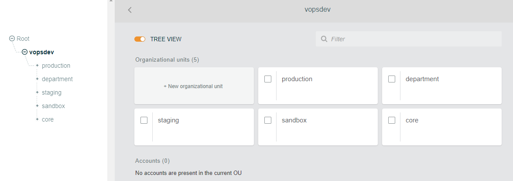
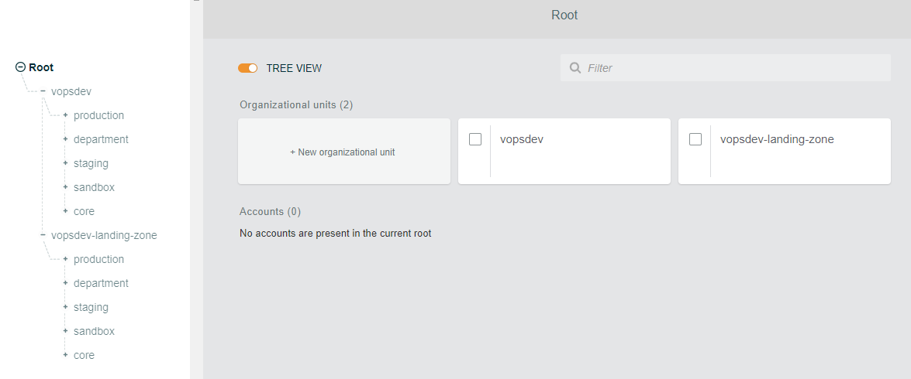

实施 AWS Landing Zone 2: 实施前场景与目标规划
该系列文章将通过一个虚拟场景介绍如何在现存的多账户环境下实施 Landing Zone (brownfield deployment). 本文介绍实施前企业多账户环境的现状, 迁移的目标规划和准备工作
实施前状况
VOPSDEV.COM 目前在 AWS Organization 下按照部门职能和项目环境类型划分了多个组织单元 (Organization Unit, OU) 并采用了多个账号以实现职责/资源分离:

业务的生产环境和测试环境账号分别在 production OU 和 staging OU 下, 开发人员的沙盒环境账号创建在 sandbox OU 下, 各个职能部门的账号创建在 department OU 下. Organization master, 安全, 审计日志, 公共服务相关账号在 core OU 下. 具体分布如下
1 | Root/ |
各个账号可以自己独立的创建 VPC. 但是如果 VPC 需要接入公司 VPN, 则需要经过安全部门审批. 经批准后, 账号的 VPC 可以通过 transit gateway attachment 连接到网络部门账号 yl-network 下的 transit gateway 来访问内网资源. DNS, Active Directory 之类的公共服务已经在共享服务账号 yl-shared-services 下创建完成. SSO 在组织账号 yl-master 下配置完成, 使用 AD-Connector 连接到共享服务账号下的 Active Directory 作为身份认证源.
这套环境目前面临的问题是: 由于缺少统一的配置管理方案, 各个账户初始化完成, 交付给用户使用后, 难以继续维持配置基线. 新的配置基线发布后又很难应用到现存的账户. 为此考虑在尽量重用现有服务的基础上实施 Landing Zone.
实施规划
在组织根下创建一个新的 OU 分支, 后面会将 Landing Zone 应用到这个 OU 分支上 
然后逐步将现有账号迁移到新的 OU 分支下, 由 Landing Zone Codepipeline 创建并维持基线资源. 而所有新的账号将通过 Landing Zone 的 Accounting Vending Machine 自动创建到新的 OU 分支下.
所有账户迁移完成后即可删除旧的 OU 分支, 最终的账号分布如下 1
2
3
4
5
6
7
8
9
10
11
12
13
14
15
16
17
18
19
20
21Root/
vopsdev-landing-zone/
production/
yl-production
staging/
yl-stagin
department/
yl-marketing
yl-hr
yl-network
yl-collaboration
yl-itdev
yl-itops
sandbox/
yl-sandbox-1
yl-sandbox-2
core/
yl-log-archive
yl-security
yl-shared-services
yl-master
资源限制
对于一个新创建的账号, 其 AWS Organization 下默认只能加入很少几个账号 (2个?) 无法满足 Landing Zone 的要求. 如果你想从头开始实施, 请确保提升组织账号的 AWS Organization Account Limit (需要通过给 AWS support 提交 ticket)